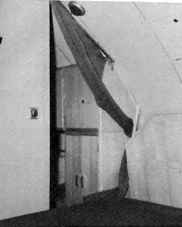

La vie à bord est améliorée grâce aux éléments
suivants :
- deux postes d'équipage, un à l'avant (19 couchettes
), l'autre à l'arrière ( 11 couchettes ), le poste des
officiers mariniers, et au centre le poste des officiers ( commandant
: 1 couchette, chambre des officiers : 3 couchettes, carré
des officiers : 2 couchettes ).
- On trouve deux lavabos et douches au poste avant, un lavabo dans
la chambre du commandant,deux poulaines.
- La cuisine comprend des marmites autoclaves, un four à pain
et à rotir, une boulangerie avec un batteur, et deux chambres
froides pour conserver les aliments pendant 30 jours, l'une à
-12°C l'autre à + 4°C.
- La ventilation est assurée par deux ventilateurs de 3000
m3/h. Le conditionnement de l'air se fait grâce à l'installation
frigorifique et la réfrigération de l'air, problème
capital de tous les sous-marins, est réalisée par des
chandelles à oxygène ( 2000 litres ) absorbeurs de CO2
( granulés de chaux sodée).
- Un sas vide-ordures est prévu pour l'évacuation discrète
des ordures en plongée.